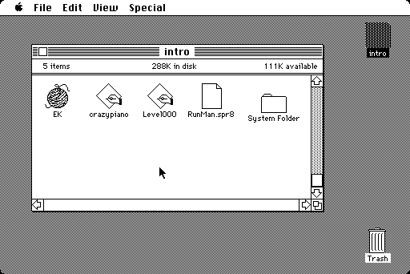
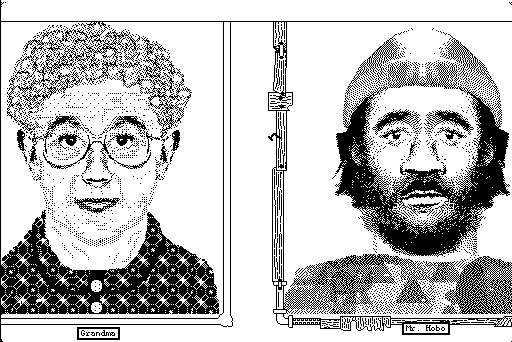
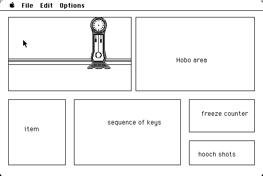

Object of the game: Prevent a hobo out in the streets in winter to freeze to death by knitting him some pieces of warm clothing! You play as a benevolant grandma, who tries her hardest to perform this task, but has to chase away cats who are after her yarn. The hobo may use temporary heating fixes in the form of hooch shots, but beware, those are limited.
Game Mechanism: One key (1 to 9 on the keypad) appears, you have a certain time to hit it. Depending on the level, the time gets progressively shorter, until it becomes close to a very good human reaction time. If you hit a bad key, you don't progress in your knitting and the "freeze counter" of the hobo continues to grow, until he dies (if you keep screwing up). Disadvantage of that version: it would become boring after a minute.
My ideal game mechanism: have a line of keys-to-hit appear at once, and have a small cursor move smoothly under them. When the cursor is smack dab under the middle of one of the keys (numbers 1-9 on the keypad), you have to hit them. If you're a little too soon, or a little too late according to some treshold (adjustable by difficulty?), it will count less towards the knitting of the piece of clothing. Also, this version allows the keys to be distanced at irregular spaces, e.g. levels will be more akin to "sequences to remember and practice on".
Download: bootable disk (.DSK run it with mini-vMac or vMac) containing the first very preliminary demo version (basically the animated "company intro", then a screen with the characters (press a key) and then the basic layout of the game mechanism).
Alternatively, get a .sit archive of the executable. It can run easily in all classic versions of the system, to the best of my knowledge (from System 1 to MacOS 9).
Screenshots:



Last update: 08.01.05